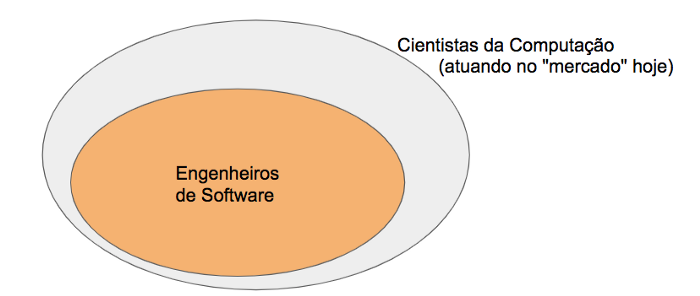
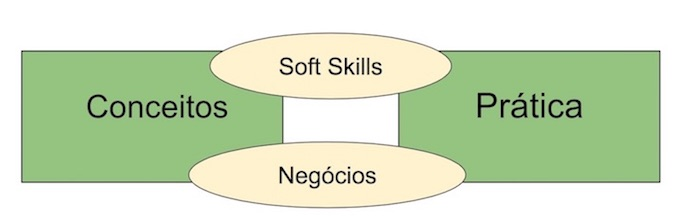
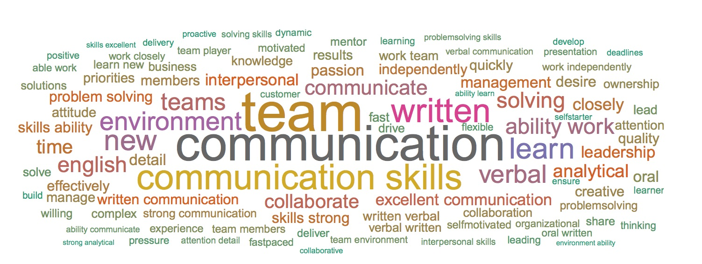

1.1 Introdução
Em 2019, ministrei pela primeira vez um curso de Engenharia de Software para alunos de graduação. Desde então, tenho estudado, trabalhado e refletido sobre questões ligadas à formação qualificada de Engenheiros de Software no Brasil.
Assim, neste artigo, vou compartilhar minha visão sobre os desafios envolvidos nessa tarefa.
1.2 Relevância
Primeiro, para delimitar o contexto deste artigo, acho importante começar lembrando que Engenharia de Software é cada vez mais essencial na formação de alunos de Ciência da Computação, Sistemas de Informação, Engenharia de Computação, etc.
Para ressaltar esse fato, na primeira aula da minha disciplina apresento para os alunos o seguinte diagrama.

Esclareço que ele não é baseado em nenhum estudo científico, mas na minha experiência acadêmica e profissional.
A lot of people are excited about other tech disciplines than software engineering. But it's good to know ratios I've seen at Uber & similar places:
PMs: 1 for every 10-20 engineers
PMM: 1:30-100
Data Scientist/analyist: 1:10-20
Designer: 1:10-20
UX researcher: 1:20-50
Segundo o tweet, grandes empresas de tecnologia possuem de 10 a 20 mais engenheiros de software do que Product Managers, analistas e cientistas de dados e designers de interfaces.
1.3 Eixos de Formação
O propósito central deste artigo é destacar que a formação qualificada de Engenheiros de Software requer um conjunto de esforços em dois eixos.
- Eixo Central de Formação: desafios conceituais e práticos.
- Eixo Transversal de Formação: soft skills e visão de negócios.

1.4 Eixo Central de Formação
Formação Conceitual
Este eixo envolve a formação básica de um Engenheiro de Software, contemplando habilidades conceituais e práticas.
Quando ministrei a disciplina pela primeira vez, senti falta de livros modernos na área. Por isso, resolvi escrever um livro-texto sobre Engenharia de Software.
“Eu não tive tempo de escrever uma carta curta, então acabei escrevendo uma carta longa.” — Mark Twain
Formação Prática
Porém, de nada adianta dominar a teoria, se o aluno nunca colocou ela em prática.
“Falar é fácil, mas quero ver o código!” — Linus Torvalds
Assim, estamos trabalhando em disciplinas práticas e roteiros ilustrativos que exercitam conceitos de processos, arquitetura, testes e DevOps.
1.5 Eixo Transversal de Formação
Formação Comportamental
O Engenheiro de Software moderno precisa dominar soft skills como comunicação, trabalho em equipe, liderança e expressão oral.

Formação em Negócios
Os profissionais precisam entender também o negócio principal da empresa e refletir sobre o valor gerado pelo software.
O desenvolvedor moderno deve participar da evolução do produto, sugerindo funcionalidades e oportunidades de negócio.
1.6 Conclusão
Para concluir, gostaríamos de mencionar dois pré-requisitos que achamos fundamentais para iniciar a formação de engenheiros de software:
- É muito importante que o aluno goste de programar. Como fizemos questão de dizer no prefácio do nosso livro, cada vez mais, engenheiros de software têm que escrever código. Hoje, há pouco espaço para dizer que eu não preciso programar, pois sou arquiteto ou analista.
- É muito importante também que o aluno saiba programar. Ou seja, o aluno já deve ter domínio de conceitos básicos de programação, algoritmos e estruturas de dados.